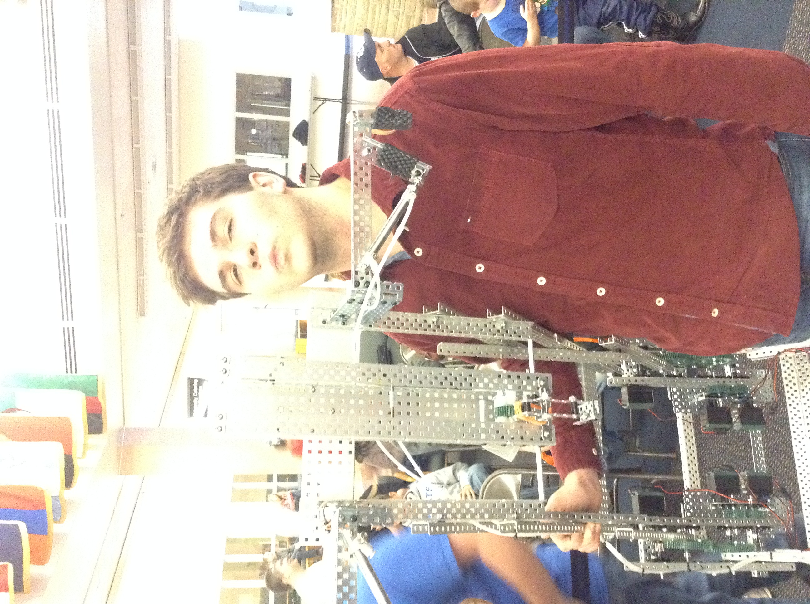
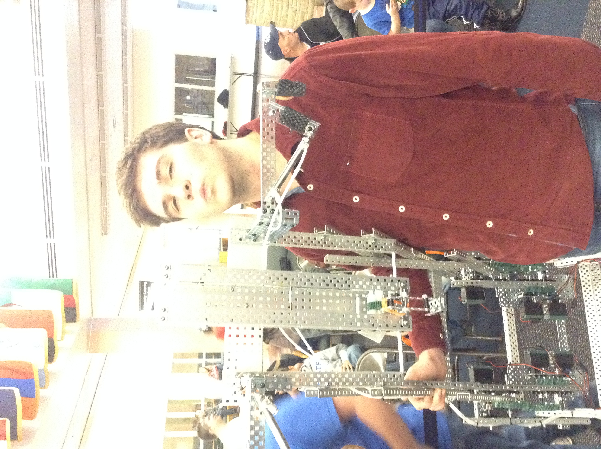

VEX Robotics
The VEX Robotics Competition is a middle school and high school level international competition that uses VEX robotics parts and RobotC programming in competition that rotates every year. Teams of students are tasked with designing and building a robot to play against other teams in a game-based engineering challenge. Classroom STEM concepts are put to the test as students learn lifelong skills in teamwork, leadership, communications, and more. Tournaments are held year -round at the regional, state, and national levels and culminate at the VEX Robotics World Championship each April!
VEX at Skyline competes in competitions across the state to build a robot to compete based on the year’s theme, such as launching, lifting, and manipulating field objects. I serve as Vice-President of Skyline VEX and co-founded the curricular club in 2014 and later the full VEX Robotics class in 2016.
2013: 1st Place Finals - VEX Robotics Cache Valley Opener
2013: 3rd Place Finals - VEX Robotics Hill Air Force Base VRC Tournament
2014: 15th Place Qualifications - VEX Robotics Top of Utah VEX Competition
2014: 22nd Place Qualifications and “Design Award” - VEX Robotics Davis High VEX Open
2014: Utah VEX Robotics State Championship at Utah State University Certificate
2015: 17th Place Qualifications - VEX Robotics Utah State VEX Championship
2016: 4th Place Finals – VEX Robotics Northridge VRC Competition
2016: 7th Place Finals - VEX Robotics Utah State Championship
2017: 3rd Place Finals – VEX Robotics Skyview VRC Competition